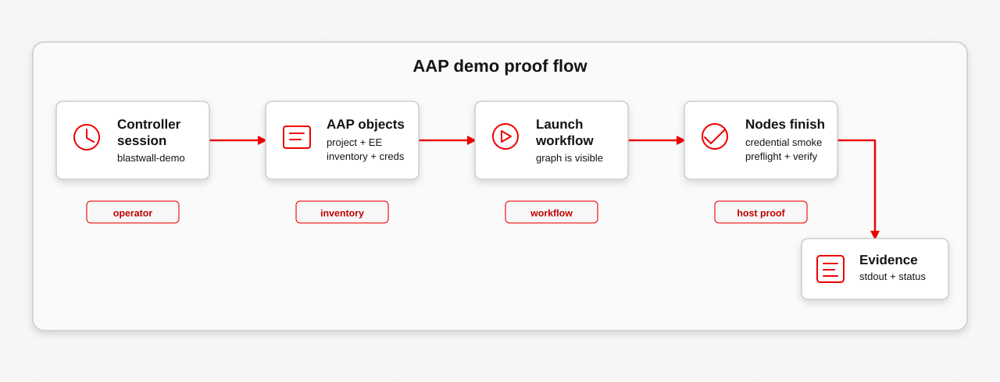

This AAP path was recorded in Calabi after the bootstrap proof was already working. AAP reads the state it needs, chooses a current host, and verifies the confined runtime without making blastwall_t responsible for changing SELinux policy.
What This Proves
The bootstrap proof creates the IdM shape, deploys the policy, runs the probes directly, and reads the target audit log. The steady-state Controller question is whether AAP can consume that state, fail closed before execution, and prove the selected host is still confined.
The recorded path uses awx for the operator-facing surface: Controller health, object inventory, workflow graph, launch, node status, and job stdout.
The refreshed workflow includes a credential smoke node before inventory sync. That makes the AAP runtime credential a visible control, not an assumption hidden behind a later preflight failure.
The operational split matters. Policy RPM rollout and marker publication happen before this workflow. AAP reads those markers as selection hints, then the verification job proves the SELinux context and denial behavior on the managed host.

What This Does Not Prove
- It does not prove that AAP enforces SELinux policy. AAP gates execution and records evidence; the managed host enforces.
- It does not mutate policy from
blastwall_t. The AAP path verifies current host state after policy rollout and marker publication already happened. - It does not prove host markers are sufficient by themselves. The verification job still checks the runtime context and denied probes on the selected host.
AAP Demo
Evidence Map
Each group maps one claim to the line of output that carries it.
Controller session
{
"controller_version": "4.7.10",
"active_node": "workshop-aap-controller-web-b94677797-n48df",
"capacity": 320
}
id username
== ==============
5 blastwall-demoThe launch path uses blastwall-demo, not the setup administrator.
AAP objects
Organization
id name
== =========
2 Blastwall
Project
id name
== =========
8 Blastwall
Execution environment
id name
== ============
4 Blastwall EE
Inventory
id name
== =======================
2 Blastwall IdM Inventory
Inventory source
id name
== ==============================
9 Blastwall IdM Inventory Source
Runtime credential
id name
== =====================
6 Blastwall IdM Runtime
Machine credential
id name
== ==================
4 svc-ansible-runnerThe workflow uses ordinary AAP objects: organization, project, execution environment, IdM inventory, inventory source, runtime credential, and machine credential.
Workflow graph and launch
project_sync Blastwall
credential_smoke Blastwall credential smoke
inventory_sync Blastwall IdM Inventory Source
preflight Blastwall preflight
verify_managed_host Blastwall verify managed host
{
"workflow_job": 467,
"status": "pending",
"launched_by": "blastwall-demo"
}The workflow graph is visible before launch, and the launch response gives the workflow job id used for the rest of the evidence.
Workflow outcome
project_sync 468 project_update successful
inventory_sync 473 inventory_update successful
credential_smoke 469 job successful
preflight 476 job successful
verify_managed_host 480 job successfulThe Controller-side result is clean: project sync, credential smoke, IdM inventory sync, preflight, and managed-host verification all finished successfully.
Credential smoke
credential_smoke: passed
principal: svc-ansible-runner
identity: svc-ansible-runner
hbac_rule: blastwall-sshThe runtime credential authenticates and reads the expected IdM state before AAP depends on it for inventory and preflight.
Preflight gate
All assertions passed
blastwall-root-local-map
hbac_rule: blastwall-ssh
blastwall-root-local-sudo
candidate_hosts
selected_hosts
selinux_user: blastwall_u:s0
mirror-registry.workshop.lan
stale_hosts
stale-blastwall-01.workshop.lanPreflight is the fail-closed gate. It reads IdM and inventory state before the verify job reaches the managed host, and it keeps the stale fixture out of the verify target set.
Managed-host proof
blastwall_u:blastwall_r:blastwall_t:s0
0
blastwall_u:blastwall_r:blastwall_t:s0
SKIP: could not create AF_ALG socket: [Errno 13] Permission denied
BLOCKED: bpf(BPF_MAP_CREATE) denied with errno 13
BLOCKED: bpf(BPF_PROG_LOAD) denied with errno 13
BLOCKED: AF_PACKET socket creation denied with errno 13
BLOCKED: unshare(CLONE_NEWUSER) denied with EACCES errno 13
BLOCKED: io_uring_setup denied with EPERM
BLOCKED: Dirty Frag NETLINK_XFRM socket creation denied with errno 13
BLOCKED: Dirty Frag AF_RXRPC socket creation denied with errno 13
BLOCKED: Fragnesia AF_ALG socket creation denied with errno 13The verify job is the host-local proof. The automation identity enters blastwall_t, sudo reaches UID 0 without leaving blastwall_t, and the demonstrated exploit surfaces are denied for that confined session.
Expected Result
awxreaches Controller and authenticates as the IdM-backed demo launcher.- The AAP objects are concrete: project, execution environment, IdM inventory source, runtime credential, machine credential, and workflow template.
- The workflow shape is visible before launch: project sync, credential smoke, inventory sync, preflight, and managed-host verification.
- The run is attributable to
blastwall-demo, and Controller reports each node job and status. - Credential smoke proves the injected IdM runtime credential before inventory and preflight depend on it.
- Preflight reads the SELinux user map, HBAC rule, sudo rule, and candidate host state before verification runs.
- The current/stale output shows
mirror-registry.workshop.lanselected andstale-blastwall-01.workshop.lanrejected as stale. - The verification job shows
blastwall_u:blastwall_r:blastwall_t:s0, sudo UID 0 without leavingblastwall_t, and denied BPF, packet_socket, userns, io_uring, xfrm, RxRPC, and Fragnesia AF_ALG probes. - The Dirty Frag / Fragnesia probe is deliberately safe: it checks xfrm, RxRPC, and AF_ALG entry points without running exploit payload logic.
- The AF_ALG result is a denial at socket creation time for this confined automation domain. That is the broad SELinux tradeoff in this proof.
Recording Guide
1. Separate setup from verification
The cast starts by keeping the boundary honest. AAP is here to select a current host and verify runtime confinement. It is not the path that lets the confined automation identity mutate SELinux policy, install policy RPMs, or publish host markers.
That split makes the demo stronger. Controller shows the project, inventory, workflow, launch user, node status, and job stdout. SELinux still owns enforcement on the managed host.
AAP verifies:
project sync
runtime credential smoke
IdM-backed inventory sync
preflight suitability
managed-host runtime proof
AAP does not do from blastwall_t:
SELinux policy mutation
policy package installation
host marker publication2. Prove the AAP session
awx ping | jq '{controller_version: .version, active_node, capacity: .instances[0].capacity}'
awx me -f humanThis proves the Controller route is live and the session belongs to the demo launcher, not the setup administrator.
3. Show the AAP objects
awx projects list --name Blastwall -f human
awx execution_environments list --name 'Blastwall EE' -f human
awx inventory_sources list --name 'Blastwall IdM Inventory Source' -f human
awx credentials list --name 'Blastwall IdM Runtime' -f human
workflow_template_id="$(awx workflow_job_templates list --name 'Blastwall runtime verification' -f json | jq -r '.results[0].id')"
awx workflow_job_template_nodes list --workflow_job_template "${workflow_template_id}" -f json |
jq -r '.results[] | [.identifier, .summary_fields.unified_job_template.name] | @tsv'This is the AAP-facing control surface: synced code, synced IdM inventory, runtime credentials, and the workflow graph.
4. Mark the Dirty Frag / Fragnesia response date
date -u '+Dirty Frag / Fragnesia response marker: %Y-%m-%d %H:%M:%S UTC'
echo 'Blastwall 0.5.2: verify xfrm, RxRPC, and AF_ALG are denied for confined automation'This is the point to call out the timing: Dirty Frag was publicly documented on May 7, 2026, and Fragnesia followed on May 13, 2026. This verification path includes xfrm, RxRPC, and AF_ALG entry-point evidence.
5. Launch the workflow from AAP
awx workflow_job_templates launch "${workflow_template_id}" -f json |
tee /tmp/blastwall-aap-launch.json |
jq '{workflow_job, status, launched_by: .launched_by.name}'
workflow_id="$(jq -r '.workflow_job' /tmp/blastwall-aap-launch.json)"
awx workflow_jobs monitor "${workflow_id}"
awx workflow_job_nodes list --workflow_job "${workflow_id}" -f json |
jq -r '.results[] | [.identifier, .summary_fields.job.id, .summary_fields.job.type, .summary_fields.job.status] | @tsv'The workflow completes the credential smoke, inventory, preflight, and verification path and exposes the job ids used for evidence.
Launching Blastwall runtime verification...
↳ 468 - Blastwall successful
↳ 469 - Blastwall credential smoke successful
↳ 473 - Blastwall IdM Inventory - Blastwall IdM Inventory Source successful
↳ 476 - Blastwall preflight successful
↳ 480 - Blastwall verify managed host successful6. Read credential, preflight, and verification evidence
credential_id="$(jq -r '.results[] | select(.identifier == "credential_smoke") | .summary_fields.job.id' /tmp/blastwall-aap-nodes.json)"
preflight_id="$(jq -r '.results[] | select(.identifier == "preflight") | .summary_fields.job.id' /tmp/blastwall-aap-nodes.json)"
verify_id="$(jq -r '.results[] | select(.identifier == "verify_managed_host") | .summary_fields.job.id' /tmp/blastwall-aap-nodes.json)"
awx jobs stdout "${credential_id}" |
grep -E 'credential_smoke|passed|blastwall-ssh'
awx jobs stdout "${preflight_id}" |
grep -E 'blastwall-root-local-map|blastwall-ssh|blastwall-root-local-sudo|"candidate_hosts"|"selected_hosts"|"stale_hosts"|"selinux_user"|mirror-registry.workshop.lan|stale-blastwall-01.workshop.lan|All assertions passed'
awx jobs stdout "${verify_id}" |
grep -E 'blastwall_u:blastwall_r:blastwall_t:s0|SKIP: could not create AF_ALG socket|Dirty Frag|Fragnesia|BLOCKED:'The first query proves the runtime credential. The second query shows the Controller-side gate and host selection. The third query shows the host-local result: confined login context, sudo confinement, and denied exploit surfaces.
Replay Link
Use AAP Lab when you want the task-first procedure for replaying this Controller proof from a prepared Calabi lab.
Scope Notes
- The Ansible-only path remains the bootstrap proof; the AAP workflow verifies current hosts after that state exists.
- AAP is the gate and the evidence surface. SELinux on the managed host is the enforcement boundary.
- IdM host markers are selection hints. The verification job still has to prove the runtime behavior.
- The stale host in the AAP demo is an IdM inventory fixture used to prove selection. It is not SSH-targeted by the verification job.
- This is an operational mitigation model, not a replacement for kernel fixes or argument-precise BPF LSM work.